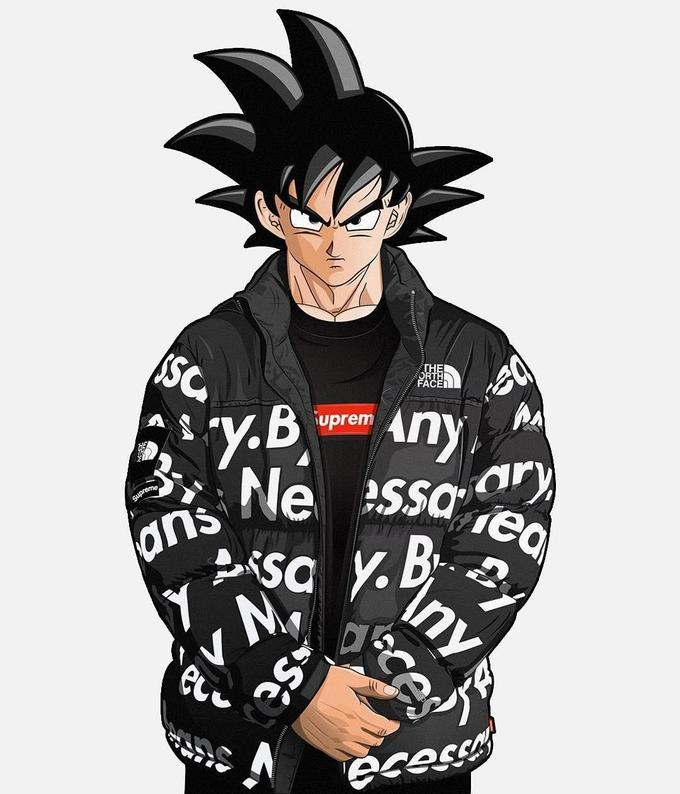

<ion-header [translucent]="true">
  <ion-toolbar>
    <ion-title>404 not found</ion-title>
  </ion-toolbar>
</ion-header>

<ion-content [fullscreen]="true">
  <ion-header collapse="condense">
    <ion-toolbar>
      <ion-title size="large"></ion-title>
    </ion-toolbar>
  </ion-header>
  <h1>PAGINA NO ENCONTRADA</h1>
  
</ion-content>
